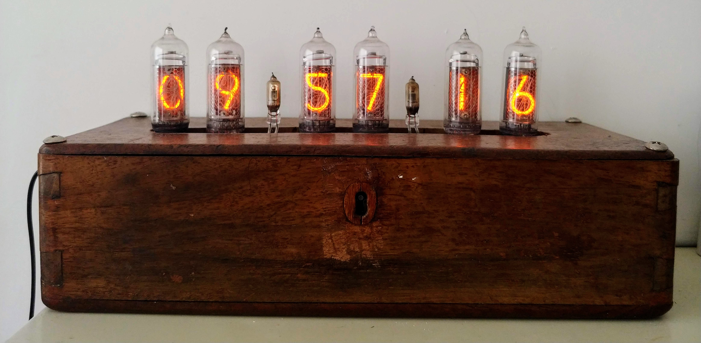
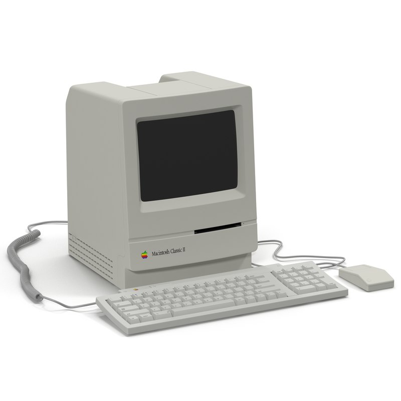

Joey Clemens
Projects
Blog
The Nixie clock
I have been fascinated with the idea of having a nixie tube clock ever since I first saw one. I had seen a few online but was amazed at how much they cost to buy. After a few eBay searches I soon realised I could get the tubes themselves for relatively cheap and looked into how difficult it might be to build one myself.
29/08/19
The next project to be added here will be the restoration of a Macintosh Classic ii computer. It came to me with power issues and no hard drive or software. Hopefully a simple recap will restore it to its former glory. 
20/08/19
I designed and built this website as a creative exercise. I wanted to learn how to do it and i've always found the best way to learn something is by hands on experience. I was surprised to find how simple it was, and yet I keep finding new tricks to improve the layout. Its somewhat addictive and im looking forward to seeing what I can come up with next.